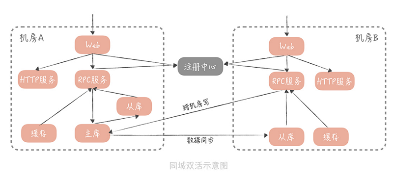
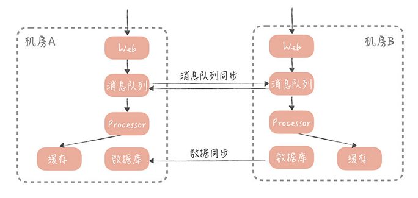

同城双活 [3] #

【跨机房写，同机房读】
异地多活 [3] #

一般来说，数据同步的方案有两种：
- 一种基于存储系统的主从复制，比如 MySQL 和 Redis。也就是在一个机房部署主库， 在异地机房部署从库，两者同步主从复制, 实现数据的同步。
- 另一种是基于消息队列的方式。一个机房产生写入请求后，会写一条消息到消息队列， 另一个机房的应用消费这条消息后，再执行业务处理逻辑，写入到存储服务中。
【异步方式同步数据】
无论是采取哪种方案，数据从一个机房，传输到另一个机房都会有延迟，所以，你需要尽量 保证用户在读取自己的数据时，读取数据主库所在的机房。为了达到这一点，你需要对用户 做分片，让一个用户每次的读写都尽量在同一个机房中。同时，在数据读取和服务调用时， 也要尽量调用本机房的服务。
【单元化，流量调度】
总结 [3] #
-
不同机房的数据传输延迟，是造成多机房部署困难的主要原因，你需要知道，同城多机 房的延迟一般在 1ms~3ms，异地机房的延迟在 50ms 以下，而跨国机房的延迟在200ms 以下。
-
同城多机房方案可以允许有跨机房数据写入的发生，但是数据的读取，和服务的调用应该尽量保证在同一个机房中。
-
异地多活方案则应该避免跨机房同步的数据写入和读取，而是采取异步的方式，将数据从一个机房同步到另一个机房。
案例 #
- 异地多活
- 阿里 【1】
- 基于Userid的单元化异地多活
- 主要改造整个交易链路
- 交易链路（单元）和非交易链路（中心）之间通过DRC同步数据。单元里的数据是全量、只读的
- 饿了么 【2】
- 思路+原则
- 基于地理位置的异地多活。用户、商家、骑手都会在相同的机房
- 可用性优先，放宽数据一致性
- 主要组件
- GZS（元数据）+APIRouter（流量路由）
- SOA Proxy：内部网关、IDC之间调用
- Data Replication Center：数据库复制、数据库和cache之间的一致性
- Data Access Layer
- zk,mq在IDC之间的同步
- 思路+原则
- 阿里 【1】
数据一致性 [1][2] #
- 数据一致性
- 强一致场景
- 都读主节点
- 最终一致性场景
- DRC异步同步数据
- 业务层异步分发数据
- 数据丢失
- 通过算法在不同机房都能生成相同的
- 强一致场景
参考 # 参考 #
-
《尽在双11:阿里巴巴技术演进与超越》 1.2节
-
饿了么异地多活技术实现（一）总体介绍 饿了么框架工具部 知乎专栏
-
《28 | 多机房部署：跨地域的分布式系统如何做？》 唐扬
-
SET化架构设计 lql_h 未